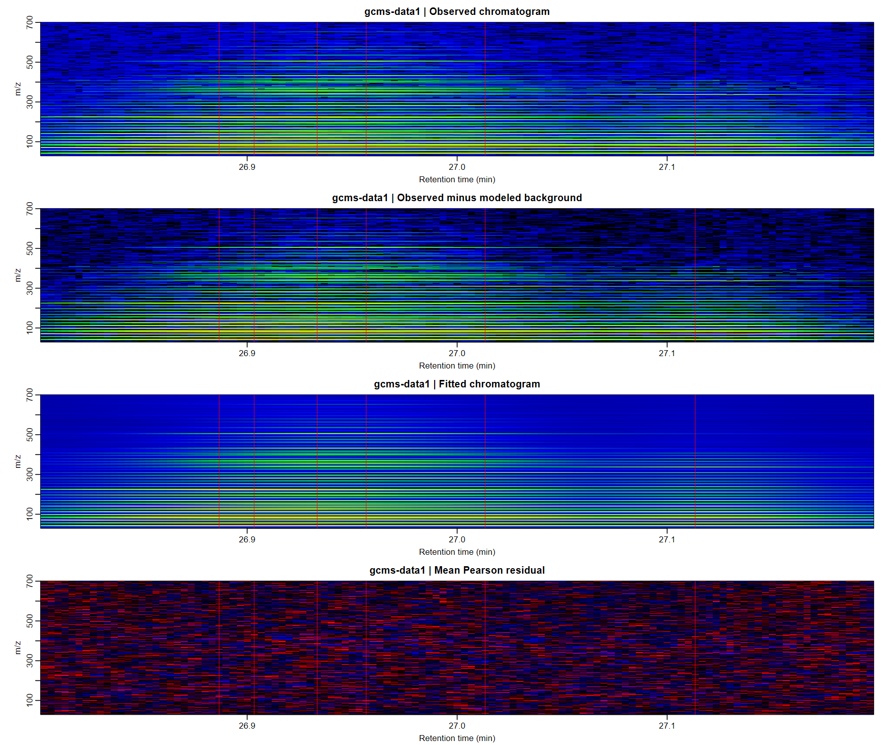
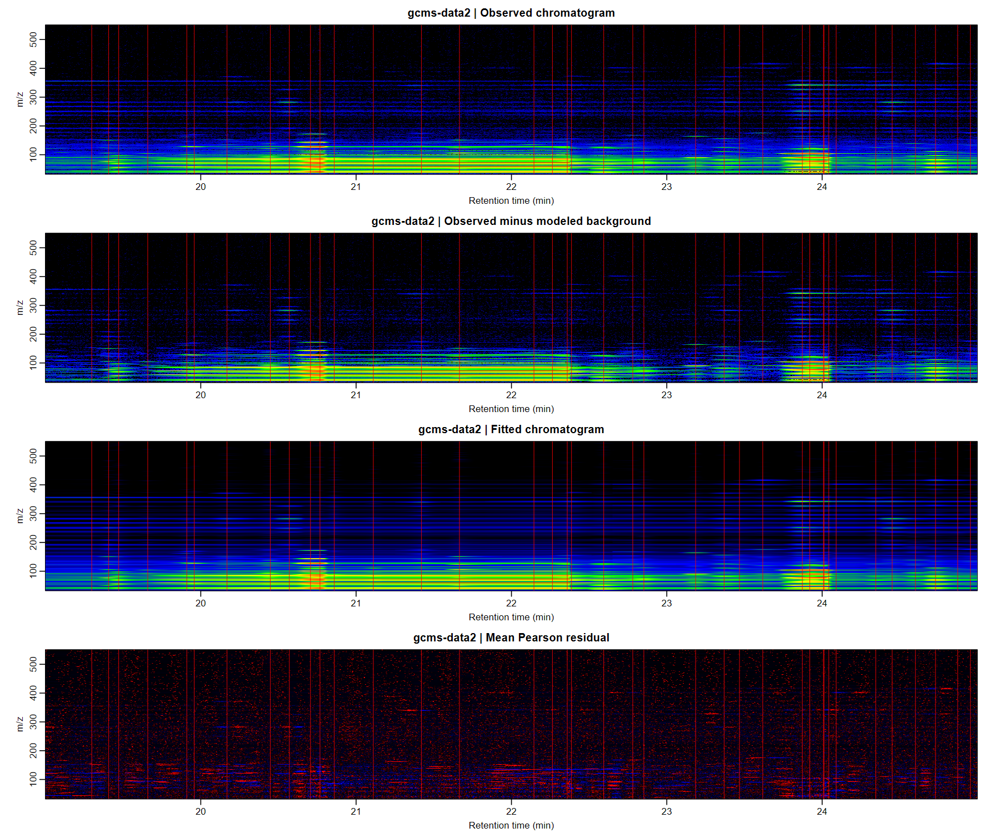
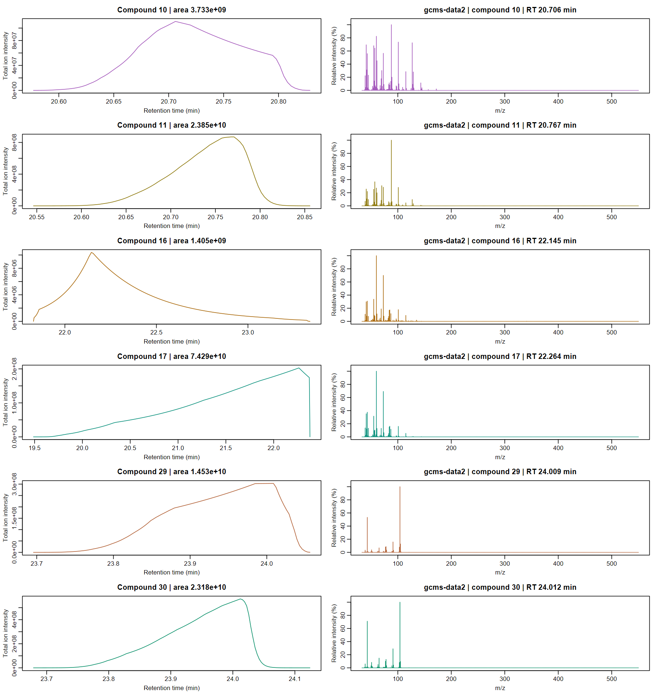

GC/MS deconvolution for single samples
Source:vignettes/articles/gcms-deconvolution.Rmd
gcms-deconvolution.RmdWhen two compounds elute together, their ion traces overlap and the
spectrum at any one scan contains contributions from both.
gcmsDeco() uses the changing ion patterns across scans to
estimate a separate elution profile, mass spectrum and integrated area
for each component. It takes an ANDI-MS .cdf file and
writes a NIST-compatible .msp library. Set
xlsx_file to export the quantification table as well.
The fit separates compound profiles from a smooth background. A hard log-concavity constraint allows the fitted profiles to be asymmetric or broad. Final spectra retain every original mass channel.
The single and multichannel deconvolution tutorial introduces selection with a fixed peak shape. Here the peak shapes are refined as part of the factorization, which is particularly useful for overloaded or shark-fin-shaped peaks.
Two experimental chromatograms
The package includes a cuticular-hydrocarbon window with six
co-eluting compounds (gcmsData1, 119 scans × 671 mass
channels) and a beer-headspace window with a prominent broad acid peak
(gcmsData2, 1,764 scans × 518 mass channels). Their row
names give retention times in minutes; column names give nominal m/z.
Both examples keep all mass channels.
library(L0glm)
library(logconNMF)
library(GCMSprime)
data(gcmsData1)
data(gcmsData2)
out <- file.path(tempdir(), "GCMSprime-examples")
dir.create(out, showWarnings = FALSE)
writeGCMSCDF(gcmsData1, file.path(out, "GCMS_data1.cdf"))
writeGCMSCDF(gcmsData2, file.path(out, "GCMS_data2.cdf"))writeGCMSCDF() preserves the intensity matrix, including
silent ions, and writes scan times in seconds for ANDI-MS readers. The
same gcmsDeco() call then works with a matrix exported from
R or a chromatogram exported by instrument software:
fit1 <- gcmsDeco(file.path(out, "GCMS_data1.cdf"),
file.path(out, "GCMS_data1.msp"), nwindows = 1L, precluster = 16L,
baseline_df = 1L,
correlation = "auto", ncores = 8L,
psf_control = list(kernel_est = convKernel("gaussian", 65L,
list(sigma = 8)), maxiter = 0L))
fit2 <- gcmsDeco(file.path(out, "GCMS_data2.cdf"),
file.path(out, "GCMS_data2.msp"), nwindows = 1L, precluster = 32L,
correlation = "auto", ncores = 8L,
psf_control = list(kernel_est = convKernel("gaussian", 65L,
list(sigma = 6)), maxiter = 0L))
fit1$compounds[c("retention_time", "area", "n_ions")]
GIC(fit2)
coef(fit2, normalize = "l1") # relative intensities in all 518 channels
fit2$seconds # elapsed time by stageThese short windows use a supplied Gaussian PSF as the initial
profile dictionary. maxiter=0L keeps this PSF fixed;
logconNMF() then refines the individual compound profiles.
For a full chromatogram, the default nwindows=10L with
positive maxiter estimates a smoothly varying PSF. An
alkane standard can supply its initial calibration through
alkanes_file="alkanes.cdf". The hydrocarbon window uses a
constant background; the longer beer window uses the automatically
chosen low-df cubic spline.
Estimate the PSF automatically
estimatePSF() provides one interface for standard
calibration and blind sample estimation. Both bundled matrices include a
full alkane TIC in attr(Y, "alkanes_TIC"); its numeric
names give retention times in minutes. The estimator uses this
calibration automatically, resamples to the sample scan interval and
refines the PSF on the sample:
psf <- estimatePSF(gcmsData2, nwindows = 3L)
X <- psf$X # sparse scan-by-scan PSF design
psf$width_scans
# A constant PSF, calibration alone, or blind fitting without a standard:
constant <- estimatePSF(gcmsData2, nwindows = 1L)
standard <- estimatePSF(gcmsData2, method = "standard", nwindows = 3L)
blind <- estimatePSF(gcmsData2, standard = NULL, method = "blind",
nwindows = 3L, precluster = 32L)precluster=FALSE uses all ion channels, 1L
uses their total, and 32L uses at most 32 size-adjusted
groups. The same identity-link noise models are available as in
logconNMF(), including negative binomial and Gamma models.
The PSF
help page describes likelihood fitting, noise scaling and
aggregation.
gcmsDeco() uses the same estimator. A CDF contains the
sample chromatogram; its accompanying R calibration attribute can be
supplied explicitly:
calibrated <- gcmsDeco(file.path(out, "GCMS_data2.cdf"),
file.path(out, "GCMS_data2_calibrated.msp"), nwindows = 3L, precluster = 32L,
psf_control = list(standard = attr(gcmsData2, "alkanes_TIC")))Calibration peaks should reflect the sample’s chromatographic
conditions. The bundled beer calibration has broader peaks than the PSF
used in the plotted comparison, so the table and figures below use the
explicit Gaussian PSFs in fit1 and fit2 above.
Automatic calibration is available through the calls in this
section.
The table reports elapsed time for each complete CDF-to-MSP fit on the benchmark workstation, using the default likelihood-checked local profile restarts, eight OpenMP threads and one BLAS thread. Timings include CDF reading, PSF initialization, factorization, original-channel completion and MSP export.
| Dataset | Scans | Mass channels | Components | Seconds | Quasi-GIC | Adjusted weighted R² |
|---|---|---|---|---|---|---|
gcmsData1 |
119 | 671 | 6 | 9.06 | 246,473 | 0.98999 |
gcmsData2 |
1,764 | 518 | 38 | 706.36 | 1,467,432 | 0.99498 |
Weighted R² uses weights 1/pmax(fitted_mean, 0.1) and a
separate weighted mean for each mass channel. Its adjustment is
conditional on the fitted profiles, using the positive spectral and
background coefficients as the parameter count.
The pooled quasi-Poisson dispersion estimates are 15.64 and 783.18, respectively. The local restart checks retain the fitted component sets in both windows. In the longer beer window, this final check takes 5.83 s; the preceding profile, spectrum and rank-refinement stages account for most of the total fitting time.
The default working-correlation adjustment is estimated from temporal
differences and held fixed during final rank comparisons. Both windows
have an estimated information factor of 1.98. The permissive
initialization retains candidates while their profiles are refined;
final broad-fragment decisions compare merged and equally refined
unmerged local models. The beer fit represents the extended acid
contribution with one log-concave profile, retaining all 518 mass
channels. Diagnostics are available in
fit2$model$contained_fusion and
fit2$model$initialization.
Cuticular hydrocarbons



The profile/spectrum panels show every recovered compound.
Download traces, heatmaps, all profiles and spectra, MSP library, or Excel table.
Beer volatiles and a broad acid peak



The profile/spectrum preview includes the broadest component and five other large components, in temporal order. The PDF contains every recovered component. The broad acid contribution and neighbouring components are shown on the original ion channels. The final residual pass can retain additional small components when their likelihood gain exceeds the compound penalty.
Download traces, heatmaps, all profiles and spectra, MSP library, or Excel table.
Plot and export the results
plot(fit1, type = "lines", nrows = 1L,
minutes_per_panel = diff(range(fit1$time)) + 0.01, labels = TRUE)
plot(fit1, type = "heatmap")
plot(fit1, type = "profiles", nrows = 3L)
plot(fit2, type = "lines", file = file.path(out, "GCMS_data2_traces.pdf"),
nrows = 1L, minutes_per_panel = diff(range(fit2$time)) + 0.01)
plot(fit2, type = "heatmap", file = file.path(out, "GCMS_data2_heatmaps.pdf"))
plot(fit2, type = "profiles", file = file.path(out, "GCMS_data2_profiles_and_spectra.pdf"),
nrows = 3L)Grey traces show individual observed ion signals after subtracting
the fitted background. Coloured curves show the fitted compounds, scaled
by their strongest ion; the square-root display makes weak peaks easier
to inspect. The four raster heatmaps show the observations,
background-corrected observations, fitted chromatogram and Pearson
residuals. Red vertical lines mark compound apices. Profile-and-spectrum
panels follow increasing apex retention time; order="area"
displays the largest compounds first.
Supply xlsx_file=file.path(out, "GCMS_data2.xlsx") when
fitting to also export the compound table and integrated areas. Each
spectrum occupies one unwrapped cell, with fragments ordered by
intensity. The returned object stores the source CDF path rather than a
second copy of the observed chromatogram; plotting reloads the required
scans from that file.
Fit a supplied PSF design directly
Use logconNMF() when a suitable PSF design and
background basis are already available. This also gives direct control
over the background for a short chromatographic window:
Y <- gcmsData1
X <- convMatrix(convKernel("gaussian", 65L, list(sigma = 8)), nrow(Y))
B <- matrix(1, nrow(Y), 1L) # constant background in this short window
nmf <- logconNMF(Y, X = X, background = B,
family = quasipoisson("identity"), precluster = 16L,
correlation = "auto", ncores = 8L)
nmf$rank
nmf$H # unit-sum, log-concave profiles
coef(nmf) # full-channel integrated intensities
GIC(nmf)For gcmsData2, a low-dimensional nonnegative spline
background can be constructed with
splines::bs(as.numeric(rownames(Y)), df=4L, intercept=TRUE).
Quasipoisson is useful for instrumental intensities with extra
variation; Poisson, Gaussian, negative binomial and Gamma signal models
are also available. See the
likelihood and shape-constraint details.
Understand the method
GC/MS deconvolution: mathematical basis explains known and estimated PSFs, compound-dependent profiles, noise, background and best rank tuning. logconNMF’s mathematical article gives the objective functions, constraints and pseudocode.
The experimental data are described in Van Oystaeyen et al. (2014) and Schreurs et al. (2024).
Identify the recovered compounds
Alkane calibration and library search add retention indices, ranked spectral matches and annotations to the Excel and MSP reports without refitting the chromatogram.